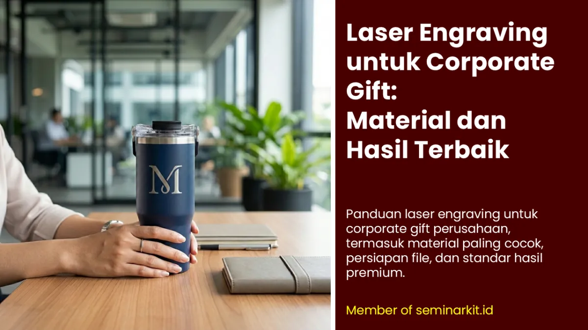

Ada satu hal yang membedakan laser engraving dari semua teknik branding lainnya: hasilnya benar-benar permanen. Tidak ada tinta yang bisa luntur, tidak ada benang yang bisa lepas, tidak ada lapisan yang bisa terkelupas. Logo perusahaan Anda terukir ke dalam material itu sendiri - dan akan tetap terlihat jelas selama produk tersebut digunakan.
Itulah mengapa laser engraving menjadi pilihan utama untuk corporate gift klien VIP, souvenir anniversary perusahaan, hadiah direksi, dan plakat penghargaan. Teknik ini tidak hanya fungsional - ia menyampaikan pesan bahwa perusahaan Anda serius dalam hal kualitas dan perhatian terhadap detail.
Cara Kerja Laser Engraving
Mesin laser engraving menggunakan sinar laser berkonsentrasi tinggi yang diarahkan ke permukaan produk berdasarkan pola digital dari file logo. Energi laser menghilangkan atau membakar lapisan tipis material di titik yang ditentukan, meninggalkan "bekas" berupa ukiran yang kontras dengan permukaan sekitarnya.
Tidak ada tinta, tidak ada kontak fisik antara alat dan produk, tidak ada bahan kimia. Prosesnya bersih, presisi, dan ramah lingkungan.
Material Corporate Gift yang Paling Cocok untuk Laser Engraving

1. Stainless Steel dan Aluminium
Material logam adalah "rumah" natural laser engraving. Tumbler stainless steel, botol minum aluminium, pena metal, kartu nama metal, dan plakat logam semuanya menghasilkan ukiran yang sangat tajam dan kontras.
Efek yang dihasilkan: area terukir berwarna lebih terang (silver/putih) pada logam gelap, atau lebih gelap (abu-abu/hitam) pada logam terang - menciptakan kontras yang elegan.
Tumbler stainless steel: Corporate gift paling populer dengan laser engraving
Pena dan pulpen metal: Gift eksekutif yang sangat mengesankan
Kartu nama metal: Pilihan premium untuk networking bisnis high-end
Plakat penghargaan: Material terbaik untuk penghargaan formal perusahaan
2. Kayu dan Bambu
Kayu memberikan kontras yang hangat dan alami dari ukiran laser. Warna kayu asli yang cerah dikontraskan dengan ukiran gelap (cokelat tua hingga hitam tergantung kedalaman laser) menciptakan tampilan yang unik dan organik.
Plakat kayu: Penghargaan dengan nuansa premium dan alami
USB kayu: Corporate gift teknologi dengan sentuhan craft
Cutting board kayu: Gift yang fungsional untuk klien premium
Frame foto kayu: Souvenir berkesan untuk pernikahan karyawan atau perayaan perusahaan
Kotak kemasan kayu: Packaging hampers premium
3. Kulit Asli dan Kulit Sintetis
Laser engraving pada kulit menghasilkan efek yang sangat eksklusif - area terukir menjadi lebih gelap dan sedikit cekung, menciptakan kontras subtle yang justru terlihat sangat mewah dan tidak berteriak.
Agenda atau notebook cover kulit: Corporate gift paling klasik untuk eksekutif
Dompet atau card holder kulit: Gift premium untuk klien VIP
Portfolio case kulit: Untuk hadiah manajemen senior
Pouch atau tas kulit kecil: Merchandise fashion premium
4. Kaca dan Keramik
Laser engraving pada kaca menghasilkan efek "frosted" atau buram yang sangat elegan - area terukir menjadi putih susu sementara area sekitarnya tetap bening. Cocok untuk plakat kaca, mug keramik premium, dan gelas kristal.
5. Akrilik
Akrilik bening diukir laser menghasilkan tampilan kontemporer yang sangat populer untuk plakat modern, display, dan nameplate perusahaan. Efek frosted pada akrilik bening menciptakan tampilan yang terlihat seperti kristal premium.
Persiapan File untuk Laser Engraving
Kualitas file desain sangat menentukan hasil ukiran. Panduan lengkap ada di artikel Cluster #5 (Cara Mempersiapkan File Logo untuk Branding Souvenir Kantor), namun berikut poin utamanya:
Format terbaik: Vektor .AI, .EPS, .SVG, atau .DXF
Pastikan desain adalah hitam putih (grayscale) - laser engraving tidak bisa multicolor
Garis paling tipis yang bisa diukir dengan baik: sekitar 0.3mm - elemen lebih tipis dari itu akan kabur
Font minimum: 8pt untuk teks yang terbaca jelas
Hindari gradasi atau halftone - konversikan ke warna solid
Kedalaman Laser: Engraving vs Marking vs Cutting
Vendor laser biasanya menawarkan tiga level intensitas yang berbeda:
Laser Marking: Intensitas rendah - hanya mengubah warna permukaan tanpa benar-benar mengukir (membuat bekas). Cocok untuk logam yang tidak ingin dirusak strukturnya.
Laser Engraving (ukir): Intensitas menengah - mengikis lapisan tipis material. Terasa cekung saat disentuh. Hasil paling umum dan paling disukai untuk branding corporate gift.
Laser Cutting: Intensitas tinggi - memotong material sepenuhnya. Digunakan untuk membuat bentuk custom, bukan untuk branding.
| Jenis Produk | Rentang MOQ | Lead Time Umum | Keterangan |
|---|---|---|---|
| Tumbler / botol metal | 25-100 pcs | 5-10 hari kerja | Paling populer untuk gift eksekutif |
| Plakat kayu / akrilik | 25-75 pcs | 7-12 hari kerja | Perlu approval desain posisi ukiran |
| Agenda / card holder kulit | 50-200 pcs | 7-14 hari kerja | Kualitas bahan sangat mempengaruhi kontras ukiran |
Estimasi Biaya dan Waktu Laser Engraving


Banner promosi: klik gambar untuk langsung terhubung ke WhatsApp tim sales.
FAQ Seputar Topik Ini
Apa keunggulan utama laser engraving dibanding teknik lain?
Keunggulan utamanya adalah hasil permanen tanpa tinta, sehingga logo tidak mudah pudar atau terkelupas.
Apakah laser engraving bisa full color?
Tidak, laser engraving umumnya menghasilkan kontras warna alami dari material dasar dan tidak mendukung full color.
Material apa yang paling aman untuk laser engraving?
Stainless steel, aluminium, kayu, akrilik, dan kulit tebal adalah material yang paling umum dan stabil untuk ukiran laser.
Mengapa file vektor sangat disarankan untuk laser?
File vektor menjaga ketajaman garis saat diproses mesin laser sehingga detail logo tetap presisi pada ukuran kecil.